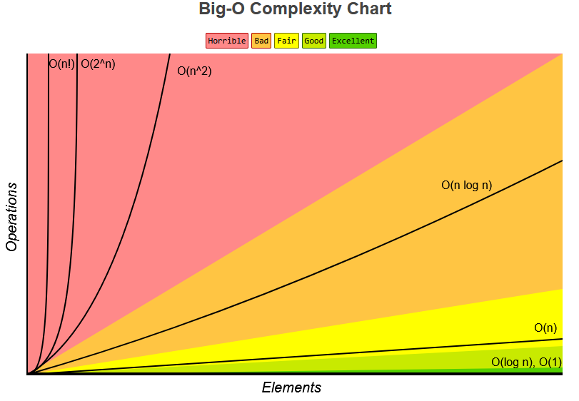

Sorting Algorithms
Complexity Chart
Time Complexity and Space Complexity between algorithms can be quickly compared using this reference chart. (lower is better):

Reference from Big-O Cheat Sheet.
Sorting Algorithms Compared
Here is a list of some of the most common sorting algorithms, along with their worst-case complexity and code.
For a more complete and thorough list, including more algorithms and best-case/average-case ratings, visit the Big O Cheat Sheet website.
| Sorting Algorithm | Time Complexity | Space Complexity | Code |
|---|---|---|---|
| Bubble Sort | O(n2) |
O(1) |
Code |
| Quicksort | O(n2) |
O(log(n)) |
Code |
| Mergesort | O(nlog(n)) |
O(n) |
Code |
| Insertion Sort | O(n2) |
O(1) |
Code |
| Selection Sort | O(n2) |
O(1) |
Code |